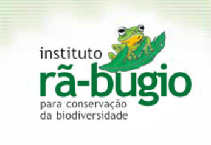
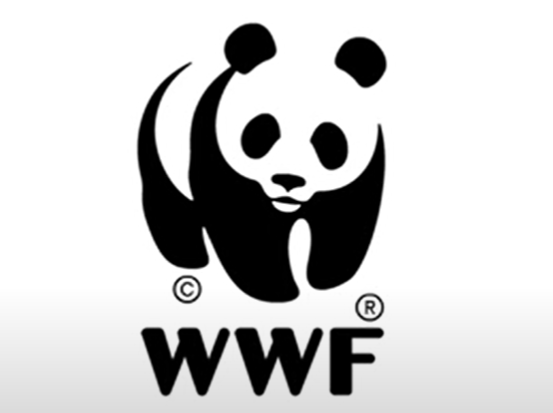
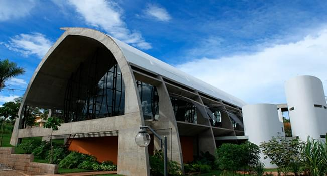

Colabore - La Forêt
Página Inicial
O Que é Sustentabilidade
Colabore
Fale Conosco
ORGANIZAÇÕES NÃO GOVERNAMENTAIS (ONG'S)

Instituto Rã-Bugio para Conservação da Biodiversidade
O Instituto Rã-bugio para Conservação da Biodiversidade é uma organização não governamental (ONG), sem fins lucrativos, sediada em Jaraguá do Sul, Santa Catarina que tem como missão defender as áreas remanescentes de Mata Atlântica para salvar o que restou da biodiversidade.
Foi criado em 1998 e até hoje essa organização tem papel fundamental na conscientização de crianças e adolescentes sobre a importâncida da preservação da mata atlântica.
O objetivo é promover o contato com natureza e aprendizado sobre a biodiversidade e serviços ambientais da Mata Atlântica através de atividades interativas em trilhas interpretativas para atendendo 1200 estudantes e 45 professores da rede pública de ensino fundamental de Guaramirim (SC) e de Jaraguá do Sul (SC).

WWF-Brasil
O WWF-Brasil é uma organização da sociedade civil brasileira, apartidária e sem fins lucrativos que trabalha em defesa da vida, e para isso nosso propósito é mudar a atual trajetória de degradação socioambiental. Criada em 1996, atua em todo Brasil e integra a Rede WWF (Fundo Mundial para a Natureza), presente em mais de 100 países.
Atuamos para influenciar políticas públicas que atendam à necessidade e à urgência de preservarmos a vida no planeta. Articulamos com o poder público e o setor privado ações integradas para reduzir significativamente a conversão de ecossistemas naturais, especialmente quando associada à produção de soja, carne e cana-de-açúcar.
CENTRO SEBRAE SUSTENTABILIDADE

Acesse o Canal do YouTube: Centro Sebrae Sustentabilidade
Atualmente o YouTube é a maior ferramenta de busca quando se trata de buscar por videos nos dando dicas e nos passando diversos tipos de conhecimento, isso por conta da facilidade de colocar o assunto na barra de pesquisar e já encontrar um vídeo relacionado.
O canal "Centro Sebrae Sustentabilidade" possui diversas dicas sobre sustentabilidade e nos explica porque esse tópico é tão importante para a sociedade atual.
Para você que não faz ideia de como começar a colaborar com a sustentabilidade de nosso planeta esse é um ótimo meio, além de explicativo é divertido e simples.